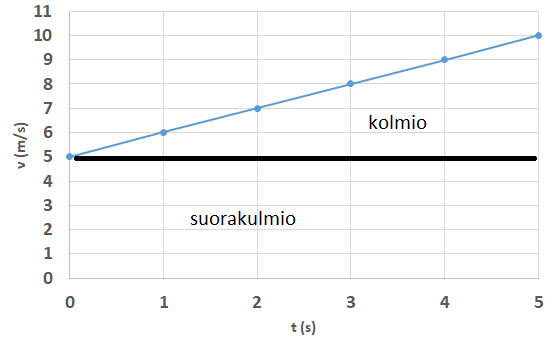
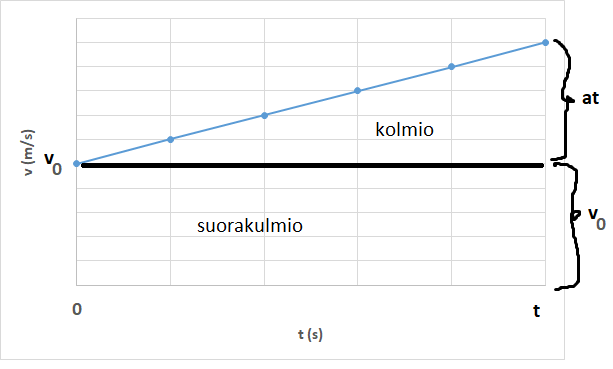

Tasaisesti kiihtyvä liike
Contents
Tasaisesti kiihtyvä liike¶
Tasaisesti kiihtyvässä liikkeessä nopeus ei pysy vakiona, vaan muuttuu joka sekunti yhtä paljon. Nopeus voi kasvaa tai pienentyä. Liike on periaatteessa kiihtyvää myös silloin, kun liikkuvan esineen suunta muuttuu, esim. kun autolla ajetaan kaarteessa nopeusmittarin näyttäessä koko ajan samaa lukemaa. Tähän palataan ympyräliikkeen yhteydessä.
Kiihtyvyys \(a\) on nopeuden muutos \(\Delta v=v_2-v_1\) jaettuna muutokseen kuluneella ajalla \(\Delta t=t_2-t_1\), siis
\(a=\frac{v_2-v_1}{t_2-t_1}\)
Usein voidaan valita kiihdytyksen alkuhetkeksi \(t_1=0\), jolloin riittää merkitä \(t_2=t\) ja tällöin kiihtyvyyden määritelmäksi tulee
\(a=\frac{v_2-v_1}{t}\)
Jatkossa käytetään merkinnän \(v_1\) sijasta merkintätapaa \(v_0\) alkunopeudesta eli nopeudesta hetkellä \(t=0\) s, ja merkinnän \(v_2\) sijasta merkintätapaa \(v\) kiihdytyksen jälkeisestä nopeudesta. Siis kiihtyvyys voidaan esittää muodossa
\(a=\frac{v-v_0}{t}\)
Esim. Kuinka suuri on kiihtyvyys, kun auto kiihdyttää nollasta sataseen viidessä sekunnissa?
Ratkaisu
\(a=\frac{100~\text{km/h}-0~\text{km/h}}{5~\text{s}}=\frac{\frac{100}{3.6}~\text{m/s}}{5~\text{s}} = \frac{100}{3.6\cdot 5} \frac{\text{m}}{\text{s}^2} = 5.6 \frac{\text{m}}{\text{s}^2}\).
Kun kiihtyvyys on tasaista, niin nopeus muuttuu joka sekunti määrällä \(a\). Niinpä \(t\) sekunnin kuluttua nopeus on muuttunut määrällä \(at\). Nopeus hetkellä \(t\) on
\(v=v_0+at\)
Tätä kutsutaan kiihtyvän liikkeen nopeusyhtälöksi.
Esim. Pyöräilijä ajaa nopeudella 15 km/h ja kiihdyttää sitten 5 sekunnin ajan kiihtyvyydellä \(0.3 \frac{\text{m}}{\text{s}^2}\). Laske pyöräilijän nopeus kiihdytyksen jälkeen.
Ratkaisu
Pyöräilijän nopeus kiihdytyksen jälkeen on \(v=v_0+at=\frac{15}{3.6} \frac{\text{m}}{\text{s}} +5~\text{s}\cdot 0.3 \frac{\text{m}}{\text{s}^2} =5.67 \frac{\text{m}}{\text{s}}=20.4 \frac{\text{km}}{\text{h}}\)
Hidastuvassa liikkeessä kiihtyvyys on negatiivinen. Tällöin nopeusyhtälöstä \(v=v_0+at\) saadaan aika, jolloin loppunopeus \(v\) on nolla:
\(0=v_0+at\)
\(-at=v_0\)
\(t=-\frac{v_0}{a}\)
Esim. Ferrari-kuski aloittaa jarrutuksen 200 km/h nopeudesta. Kiihtyvyys jarrutuksessa on \(-5.5 \frac{\text{m}}{\text{s}^2}\). Laske jarrutukseen kuluva aika.
Ratkaisu
\(t=-\frac{v_0}{a}=-\frac{200/3.6 \frac{\text{m}}{\text{s}}}{-5.5 \frac{\text{m}}{\text{s}^2}} = \frac{200}{3.6\cdot 5.5}~\text{s} = 10.1~\text{s}\).
Tasaisesti kiihtyvässä liikkeessä (aika, nopeus) -kuvaaja on suora. Jos suora on laskeva, niin nopeus pienenee, ja jos jos suora on nouseva, niin nopeus kasvaa. Kappaleen liikkuman matkan saa aina laskettua (aika, nopeus) –kuvaajasta nopeuskäyrän ja aika-akselin välisenä pinta-alana. Tämä pätee niin tasaisessa kuin muuttuvassakin liikkeessä.
Esim. Oheisessa kuvassa alkunopeus on \(v_0=5 \frac{\text{m}}{\text{s}}\) ja kiihtyvyys \(a=1 \frac{\text{m}}{\text{s}^2}\). Laske viiden sekunnin aikana kuljettu matka.

Ratkaisu
Kuljettu matka saadaan laskemalla: suorakulmion ala + kolmion ala
Suorakulmio: \(5 \frac{\text{m}}{\text{s}} \cdot 5~\text{s}=25~\text{m}\)
Kolmio: \(\frac{1}{2}\cdot 5~\ text{s} \cdot (10 \frac{\text{m}}{\text{s}} - 5 \frac{\text{m}}{\text{s}})=\frac{1}{2}\cdot 5~\text{s}\cdot 5 \frac{\text{m}}{\text{s}}=12.5~\text{m}\)
Yhteensä kuljettu matka on 25 m + 12.5 m = 37.5 m.
Edellisen esimerkin laskutoimitus voidaan suorittaa yleisesti:

Matka = suorakulmion ala + kolmion ala eli \(x=v_0\cdot t+\frac{1}{2} at\cdot t\), joka voidaan sieventää kiihtyvän liikkeen paikkayhtälöksi:
\(x=v_0 t + \frac{1}{2} at^2\)
Kaavaan voidaan tarvittaessa lisätä vielä paikka \(x_0\), jossa ollaan juuri silloin kun kiihdytys alkaa. Tällöin kappaleen sijaintia kuvaavaksi yhtälöksi muodostuu \(x=x_0+v_0 t+ \frac{1}{2} at^2\). Usein voidaan kuitenkin valita \(x_0=0\) m.
Esim. Pyöräilijä ajaa nopeudella 15 km/h ja kiihdyttää sitten 5 sekunnin ajan keskikiihtyvyydellä \(0.3 \frac{\text{m}}{\text{s}^2}\). Kuinka pitkän matkan pyöräilijä etenee kiihdytyksen aikana?
Ratkaisu
\(x=\frac{15}{3.6}~\frac{\text{m}}{\text{s}} \cdot 5~\text{s}+\frac{1}{2}\cdot 0.3~\frac{\text{m}}{\text{s}^2}\cdot (5 ~\text{s})^2=24.6~\text{m}\)
Esim. Ferrari-kuski aloittaa jarrutuksen 200 km/h nopeudesta. Kiihtyvyys jarrutuksessa on \(-5.5 ~\frac{\text{m}}{\text{s}^2}\).
a) Laske jarrutusmatka, kun jarrutusajaksi laskettiin aiemmin 10.1 s.
b) Paljonko on pysähtymismatka, jos matkaa aletaan mitata kohdasta, josta kuljettajalla kestää vielä 0.5 sekuntia aloittaa jarrutus?
Ratkaisu
a) \(x=\frac{200}{3.6} \frac{\text{m}}{\text{s}}\cdot 10.1~\text{s}-\frac{1}{2} \cdot 5.5~\frac{\text{m}}{\text{s}^2}\cdot (10.1~\text{s})^2=281~\text{m}\)
b) Nyt auto liikkuu ennen jarrutuksen alkua mittauskohdan alusta matkan \(x_0=\frac{200}{3.6}~\frac{\text{m}}{\text{s}}\cdot 0.5~\text{s} = 27.8~\text{m}\).
Kokonaismatka on \(x=27.8~\text{m} + 281~\text{m}=309~\text{m}\).
Tehtävien ratkaisun periaate¶
Yleisesti fysiikan yhtälöissä on monta kirjainlyhenteillä ilmaistua suuretta. Suureista saa jäädä tuntemattomaksi niin monta kappaletta kuin yhtälöitä on käytettävissä. Siis jos käytämme sekä nopeuden että paikan yhtälöä, voimme selvittää niiden avulla kaksi tuntematonta suuretta. Niiden paikalle merkitään kirjainlyhenne, ja kaikkien muiden suureiden paikalle pitäisi tehtävänannon perusteella löytää lukuarvo. Periaate pätee muutenkin: jokaista tiedossa olevaa yhtälöä kohden saa olla yksi tuntematon muuttujan arvo. Kaikki yhtälöt voi kirjoittaa WolframAlphaan kerralla.
Esim. Henkilöauto ajaa talvikelillä nopeudella 100 km/h. Sen kiihtyvyys jarrutuksessa on \(-2.8~\frac{\text{m}}{\text{s}^2}\). Kuinka pitkä on jarrutusmatka?
Ratkaisu
Tehtävänannon perusteella tiedetään seuraavat suureiden arvot:
\(v_0=100~\frac{\text{km}}{\text{h}}= \frac{100}{3.6}~\frac{\text{m}}{\text{s}} \approx 27.8~\frac{\text{m}}{\text{s}}, a=-2.8~\frac{\text{m}}{\text{s}^2}, v=0~\frac{\text{m}}{\text{s}}, x_0=0~\text{m}\).
Jarrutusmatkaa \(x\) ei tiedetä, eikä myöskään jarrutukseen kuluvaa aikaa \(t\), vaikka sitä ei tehtävänannossa mainitakaan.
Ratkaisutapa 1:
Lasketaan nopeusyhtälöstä \(t=-\frac{v_0}{a}= -\frac{27.8~\text{m/s}}{-2.8~\frac{\text{m}}{\text{s}^2}} \approx 9.93~\text{s}\)
Sijoitetaan tämä paikkayhtälöön:
\(x=0~\text{m}+27.8~\frac{\text{m}}{\text{s}}\cdot 9.93~\text{s}+\frac{1}{2} (-2.8) \frac{\text{m}}{\text{s}^2} \cdot (9.93 ~\text{s})^2 \approx 138~\text{m}\)
Ratkaisutapa 2:
Kirjoitetaan nopeus- ja paikkayhtälö suoraan WolframAlphaan siten, että tunnetut lukuarvot on sijoitettu paikoilleen:
solve 0=100/3.6-2.8*t, x=100/3.6*t+0.5*(-2.8)*t^2
Vastaukseksi saadaan \(t \approx 9.92063, x \approx 137.787\).
Toisinaan, jos yhtälöissä on mukana muuttujia toiseen potenssiin korotettuna, ratkaisuja saattaa tulla kaksi. Tällöin oikean ratkaisun valitsemiseksi kannattaa tarkastella ajan, paikan ja nopeuden merkkejä. Esimerkiksi negatiivinen aika ei yleensä ole fysikaalisesti järkevä tulos. Mitään kaavamaisia sääntöjä sille, mikä vastaus milloinkin on oikea, ei kannata opetella ulkoa.
Esim. Auto liikkuu talvikelillä nopeudella 90 km/h eli 25 m/s. Kuski huomaa poron 60 m päässä tiellä ja suorittaa 1 s reaktioajan jälkeen hätäjarrutuksen. Millä nopeudella auto osuu poroon, kun hätäjarrutuksessa kiihtyvyys on \(-3.0~\frac{\text{m}}{\text{s}^2}\)?
Ratkaisu
Tehtävänannosta selviää, että auto ehtii liikkua yhtä sekuntia vastaavan matkan eli 25 m ennen kuin jarrutus alkaa.
Listataan muuttujat: \(v=?,v_0=25~\frac{\text{m}}{\text{s}}, a=-3.0~\frac{\text{m}}{\text{s}^2}, x=60~\text{m}, x_0=25~\text{m}, t=?\)
Käytössä ovat yhtälöt: nopeusyhtälö \(v=v_0+at\), paikkayhtälö \(x=x_0+v_0 t+\frac{1}{2} at^2\)
Kirjoitetaan WolframAlphaan nopeus- ja paikkayhtälö siten, että niihin sijoitettu tiedossa olevat suureet:
solve v=25-3*t, 60=25+25*t-0.5*3*t^2
Ensimmäinen ratkaisuvaihtoehto on \(t\approx 1.54282, v \approx 20.3715\). Auto siis törmää poroon noin 1.5 sekunnin kuluttua nopeudella 20.37 m/s eli noin 73 km/h.
Toinen ratkaisuvaihtoehto on \(t \approx 15.1238, v\approx -20.3715\). Tämän mukaan 15 sekunnin kuluttua auto olisi poron kohdalla, mutta liikkumassa takaperin nopeudella 73 km/h. Tämä ei kuulosta järkevältä. Vastaus on peräisin siitä, että jos auto vielä pysähtymisen jälkeenkin jatkaisi jarruttamista, se alkaisi matemaattisesti ajateltuna liikkua kiihtyvällä nopeudella taaksepäin, vaikka oikeastihan niin ei voi tapahtua. Tällöin se olisi hetken kuluttua uudestaan siinä kohdalla, jossa poro alunperin oli.